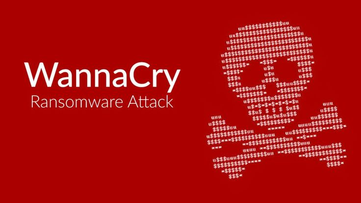

INTRODUCCIÓN A LA CIBERSEGURIDAD
La ciberseguridad protege sistemas, redes y programas de ataques digitales que buscan robar, alterar o destruir información, extorsionar a los usuarios o interrumpir operaciones críticas.
¿POR QUÉ ES IMPORTANTE?
En un mundo cada vez más digitalizado, la ciberseguridad es esencial para proteger la privacidad, la integridad y la disponibilidad de la información. Sin una protección adecuada, las organizaciones y los individuos están expuestos a riesgos como el robo de datos, el fraude y la interrupción de servicios.
ÁREAS CLAVE
- Seguridad de redes: Protege la infraestructura de red contra accesos no autorizados.
- Seguridad de aplicaciones: Asegura que las aplicaciones sean seguras desde su diseño hasta su implementación.
- Gestión de identidades: Controla el acceso a los recursos mediante la autenticación y autorización.
- Respuesta a incidentes: Proporciona un enfoque estructurado para manejar y mitigar los ciberataques.
PRINCIPALES AMENAZAS
Las amenazas cibernéticas son cada vez más sofisticadas. Algunas de las más comunes incluyen:
MALWARE
El malware es software malicioso diseñado para dañar sistemas o robar información. Incluye virus, gusanos, troyanos y spyware. Puede propagarse a través de correos electrónicos, descargas o dispositivos infectados.
PHISHING
El phishing es un intento de engañar a los usuarios para que revelen información confidencial, como contraseñas o números de tarjetas de crédito. Los atacantes suelen hacerse pasar por entidades legítimas mediante correos electrónicos o sitios web falsos.
RANSOMWARE
El ransomware es un tipo de malware que cifra los archivos de la víctima y exige un rescate para restaurar el acceso. Es una de las amenazas más lucrativas para los ciberdelincuentes.
ATAQUES DDoS
Los ataques de denegación de servicio (DDoS) sobrecargan los sistemas con tráfico malicioso, dejándolos inoperativos. Estos ataques pueden afectar a sitios web, servidores y redes.
INGENIERÍA SOCIAL
La ingeniería social es una técnica en la que los atacantes manipulan a las personas para que revelen información confidencial o realicen acciones que comprometan la seguridad. Esto puede incluir llamadas telefónicas falsas, mensajes de texto o interacciones en redes sociales.
INYECCIÓN SQL
Los ataques de inyección SQL ocurren cuando un atacante inserta código malicioso en las consultas de una base de datos. Esto puede permitirles acceder, modificar o eliminar datos sensibles, comprometiendo la integridad de la información.
Malware

Phishing
Ransomware
Ataques DDoS
Ingeniería Social
Inyección SQL
¿CÓMO PROTEGERSE?
Protegerse contra las amenazas cibernéticas requiere un enfoque proactivo. Aquí hay algunas recomendaciones:
CONTRASEÑAS SEGURAS
Usa contraseñas largas y complejas, y cámbialas regularmente. Considera el uso de un gestor de contraseñas para almacenarlas de forma segura.
ACTUALIZACIONES DE SOFTWARE
Mantén tu software y sistemas operativos actualizados para corregir vulnerabilidades. Las actualizaciones suelen incluir parches de seguridad críticos.
AUTENTICACIÓN DE DOS FACTORES
Habilita la autenticación de dos factores (2FA) para agregar una capa adicional de seguridad. Esto requiere un segundo método de verificación, como un código enviado a tu teléfono.
RECURSOS ADICIONALES
Aquí encontrarás enlaces útiles para aprender más sobre ciberseguridad:
DOCUMENTACIÓN OFICIAL
- ENISA - Agencia de la UE para la Ciberseguridad: Recursos y guías de ciberseguridad de la Unión Europea.
- INCIBE - Instituto Nacional de Ciberseguridad de España: Documentación y herramientas para la ciberseguridad en España.
- OWASP Top Ten: Lista de los diez riesgos de seguridad más críticos en aplicaciones web.
CURSOS EN LÍNEA
HERRAMIENTAS ÚTILES
- Kali Linux: Distribución de Linux especializada en pruebas de penetración y seguridad.
- Wireshark: Analizador de protocolos de red para inspeccionar tráfico en tiempo real.
- OWASP ZAP: Herramienta de seguridad para encontrar vulnerabilidades en aplicaciones web.